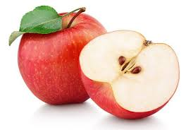

<!--
<html lang="ko">
<head>
<meta charset="utf-8">
<title>경로 테스트</title>
</head>
<body>


</body>
</html>
-->
<!DOCTYPE html>
<html lang="ko">
<head>
<meta charset="UTF-8">
<meta http-equiv="X-UA-Compatible" content="IE=edge">
<meta name="viewport" content="width=device-width, initial-scale=1.0">
<title>Document</title>
</head>
<script>
    const arr = [1,2,3,4,5];
    arr.forEach(function(a1,a2,a3){
        //console.log(a2);
        arr.splice(0,1);
        arr.splice(4,0,a2+1);
        console.log(arr); 
    });
</script>
<body>
    
</body>
</html>
<!--
    1. 해당 배열에서 출력은 다음과 같이
    [2,3,4,5,1]
    [3,4,5,1,2]
    [4,5,1,2,3]
    [5,1,2,3,4]
    [1,2,3,4,5]
-->